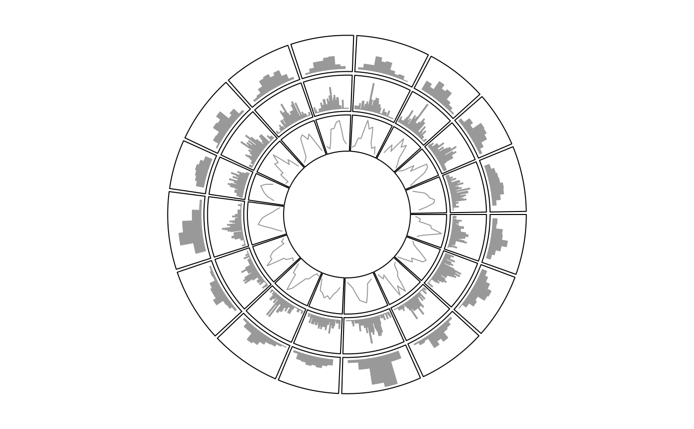

circos.trackHist.RdDraw histogram in cells among a whole track
circos.trackHist(factors, x, track.height = circos.par("track.height"), track.index = NULL, force.ylim = TRUE, col = ifelse(draw.density, "black", NA), border = "black", lty = par("lty"), lwd = par("lwd"), bg.col = NA, bg.border = "black", bg.lty = par("lty"), bg.lwd = par("lwd"), breaks = "Sturges", include.lowest = TRUE, right = TRUE, draw.density = FALSE, bin.size = NULL, area = FALSE)
| factors | Factors which represent the categories of data |
|---|---|
| x | Data on the x-axis |
| track.index | Index for the track which is going to be updated. Setting it to |
| track.height | Height of the track. It is the percentage to the radius of the unit circle. If to update a track, this argument is disabled. |
| force.ylim | Whether to force all cells in the track to share the same |
| col | Filled color for histogram |
| border | Border color for histogram |
| lty | Line style for histogram |
| lwd | Line width for histogram |
| bg.col | Background color for the plotting regions |
| bg.border | Color for the border of the plotting regions |
| bg.lty | Line style for the border of the plotting regions |
| bg.lwd | Line width for the border of the plotting regions |
| breaks | see |
| include.lowest | see |
| right | see |
| draw.density | whether draw density lines instead of histogram bars. |
| area | whether to fill the area below the density lines. If it is set to |
| bin.size | size of the bins of the histogram |
It draw histogram in cells among a whole track. It is also an example to show how to add self-defined high-level graphics by this package.
x = rnorm(1600) factors = sample(letters[1:16], 1600, replace = TRUE) circos.initialize(factors = factors, x = x)circos.trackHist(factors = factors, x = x, col = "#999999", border = "#999999")circos.trackHist(factors = factors, x = x, bin.size = 0.1, col = "#999999", border = "#999999")circos.trackHist(factors = factors, x = x, draw.density = TRUE, col = "#999999", border = "#999999")